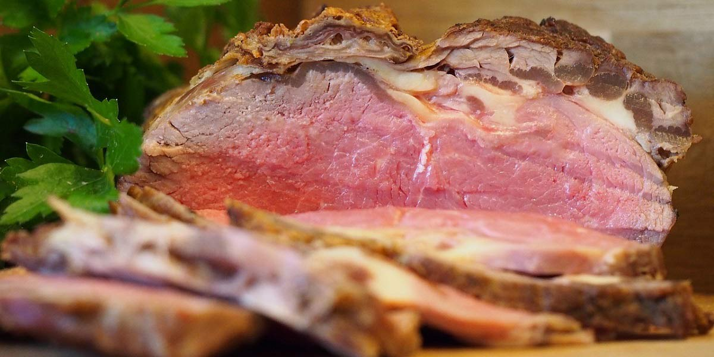

Roast Topside Beef
Recipe Specification
Ingredients List
| Ingredients | Quantity |
|---|---|
| Topside of Beef | 1x2kg |
| Black Peppercorns | 25x1 |
| Maldon Sea Salt | 15g |
| English Mustard Powder | 20g |
| Dried Thyme | 15g |
| Celery Seeds | 1 tsp |
| Vegetable Oil | 40ml |
Yield: 10-12 portions
Preparation
- Take topside of beef out of the fridge for 1 hour before putting to the oven to get to room tempreture.
- Place Maldon sea salt, peppercorns, English mustard, thyme and celery seeds in a pestle and mortar. Mix with vegetable oil.
- Massage oil into topside of beef.
- Place topside of beef on rack and place the rack in roasting tin.
- Pre-heat oven to 170’C.
Cooking Instructions
- Place beef in the oven for 12 and ½ minutes per 500g of meat for medium rare. For a 2kg joint, cook for 50-52 minutes. Use a meat thermometer to ensure core temperature is 52’C.
- Remove from oven, cover with 2 layers of foil and leave to rest for 20-30 minutes.

Serving Suggestions
Serve roast beef with Roast potatoes, Yorkshire pudding and gravy.
Storing instructions
Allow to cool to room temperature. Consume within 4 days of making. Store in the fridge
Reheating Instructions
Place in the microwave for 1-2 minutes.